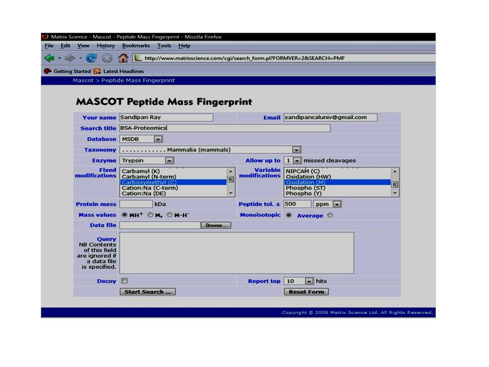
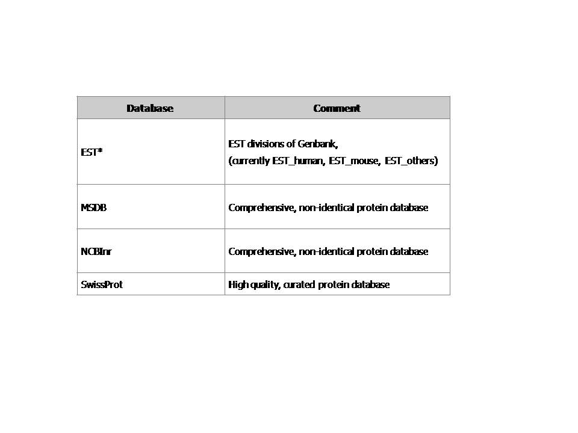
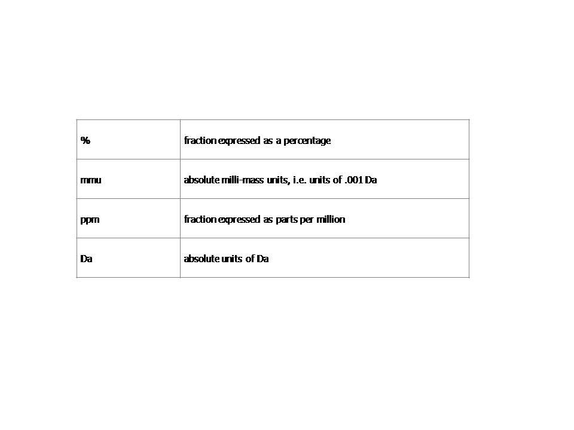
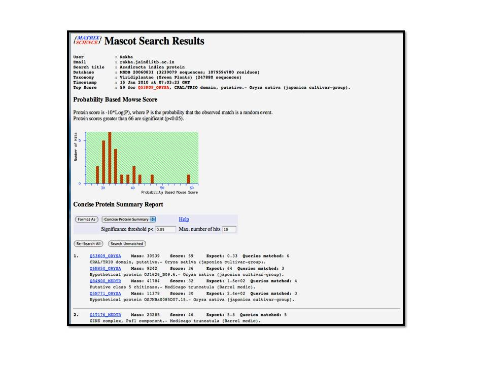
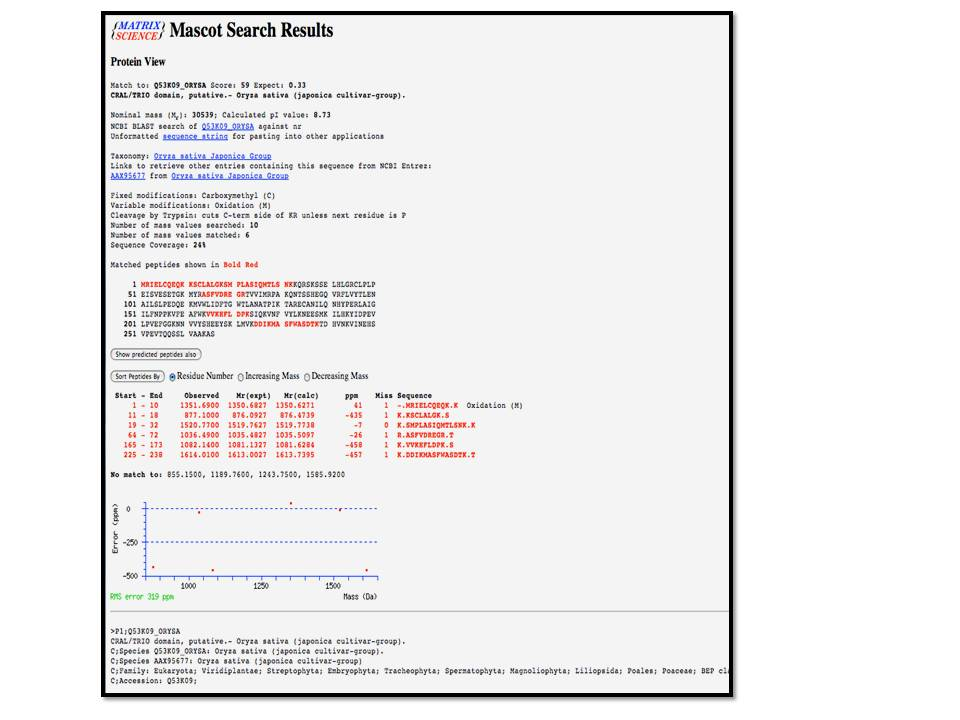
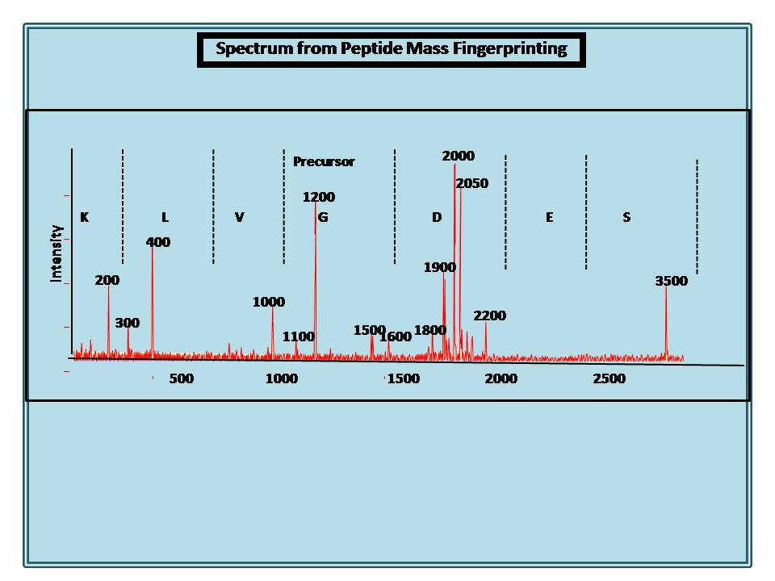
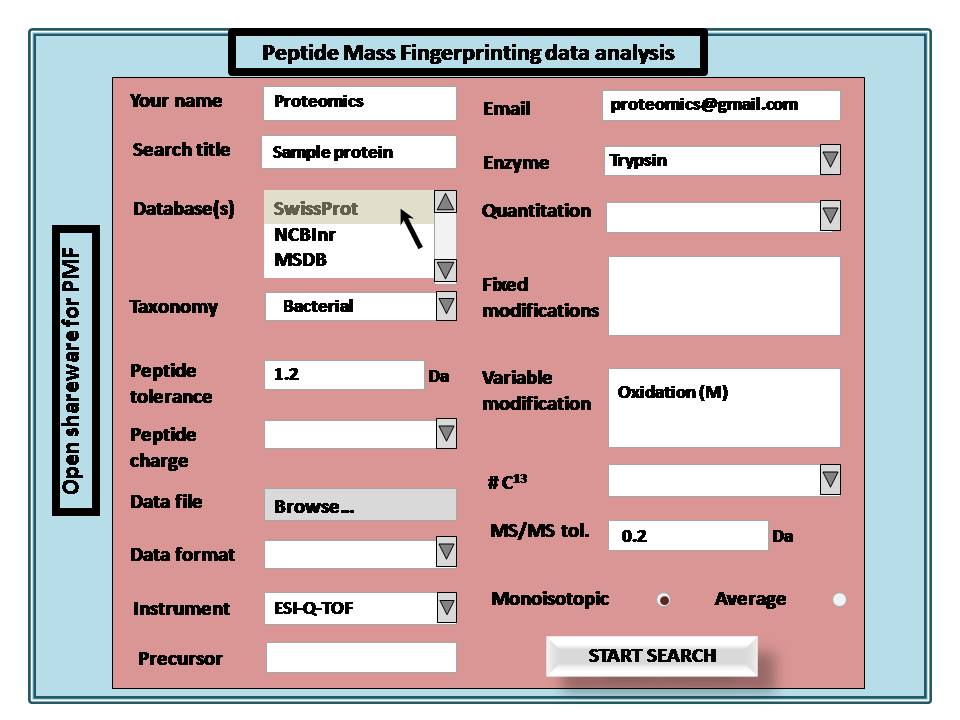
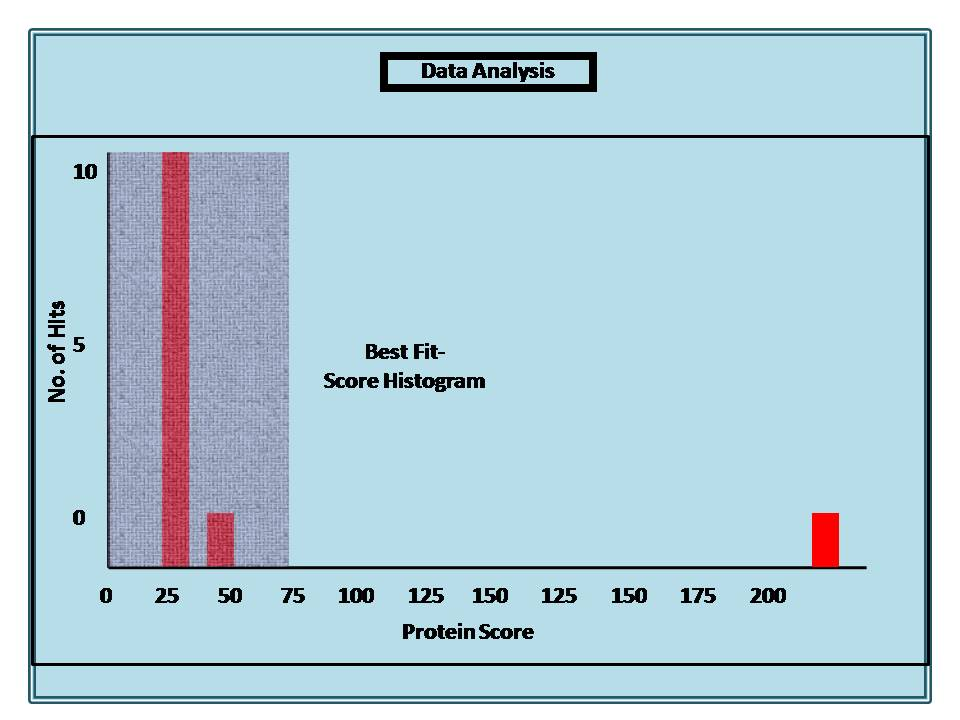

Theory
Result of the MALDI-TOF analysis can be up-loaded as ASCII files or the mass pick list can be introduced manually in the search engine for identification of the protein of interest. Computer searching algorithms are used to identify protein sequences using peptide mass information (mass map) obtained from proteolytic digests of proteins. If the database does not contain the sequence of the unknown protein, then a successful search will provide those entries showing the closest sequence homology, often equivalent proteins from related species. In order to obtain a satisfactory result multiple parameters required to be specified. The brief definitions of the parameters are given below.
1. Database: Database is a systemic organization of data to pile up and retrieve the data for easy accession during the identification the proteins.
2. Taxonomy: Taxonomy is an art of classification of organisms based on pre-determined criteria to simplify the search to limited hits.
3. Fixed modifications: Some reagents/chemicals have ability to modify the amino acids during sample preparations needs to be specified to reimburse the mass of the modifications while searching for identification.
4. Variable modifications: Quite a few of the amino acids (like Met, Tyr) are highly prone to modifications during sample preparation is need to be specified to obtain superior results.
5. Data format: Data file which is compactable to search engine having mass peak list, intensity of the peak and search parameters.
6. Enzyme: An enzyme has a specificity to cleave the proteins to smaller peptides need to be specified to get the finger prints of whole protein in mass spectrometric analysis.
7. Allow up to- Miss-cleavage: Sometime enzyme misses the cleavage site in protein need to be addressed to identify the best hit.
8. Monoisotopic mass: Monoisotopic mass indicates the total mass of the highly abundant isotopes of the amino acid.
9. Average mass: Average mass is the mass of the average of the all existing isotopes in amino acid.
10. Instrument: Quite a few of mass spectrometry instruments are in practice for protein identification with different mass analyzers, ion source and detectors need to be specified to get best result.
11. Data file: Data file act as a browser to import dataset generated from mass spectrometry into the search engine to obtain the results.
Search engines: Different search engines are available for protein identification using mass spectrometric peptide mapping information. MASCOT, SEQUEST and ProFound are the most commonly used search engines for identification of proteins and peptides.
MASCOT (http://fields.scripps.edu/sequest): SEQUEST is a registered trademark of the University of Washington. This search engine correlates uninterpreted tandem mass spectra of peptides with amino acid sequences from protein and nucleotide databases. The result offers the amino acid sequence and thus the protein(s) and organism(s) that correspond to the mass spectrum being analyzed.
SEQUEST(http://fields.scripps.edu/sequest): SEQUEST is a registered trademark of the University of Washington. This search engine correlates uninterpreted tandem mass spectra of peptides with amino acid sequences from protein and nucleotide databases. The result offers the amino acid sequence and thus the protein(s) and organism(s) that correspond to the mass spectrum being analyzed.
ProFound(http://prowl.rockefeller.edu/prowlcgi/profound.exe): ProFound uses Bayesian algorithm to identify proteins from protein databases. One of the major advantages of this search engine is that it provides accurate identities of proteins even when the data quality is relatively low or the target protein is present in a complex mixture.

The experimental mass lists obtained in the previous experiment (Experiment # 6) are compared with a database of peptide mass values using different search engines. The different parameters are specified to identify the precise entry.
- Select the sequence database to be searched.
Database Comment EST EST divisions of Genbank, (currently EST_human, EST_mouse, EST_others) MSDB Comprehensive, non-identical protein database NCBInr Comprehensive, non-identical protein database SwissProt High quality, curated protein database - Select taxonomy. It allows searches to be limited to entries from particular species or groups of species.
- Specify the cleaving agent used for protein digestion. For example, Trypsin.
- Choose a setting of 1 or maybe 2 missed cleavage sites ** (digest mixtures usually include some partial fragments, that is, peptides with missed cleavage sites).
- Select “fixed modifications”. Fixed modifications are applied universally, to every instance of the specified residue(s) or terminus. There is no computational overhead associated with a fixed modification; it is simply equivalent to using a different mass for the modified residue(s) or terminus. For example, selecting Carboxymethyl (C) means that all calculations will use 161 Da as the mass of cysteine.
- Select Variable modifications***. Variable modifications are those which may or may not be present. Mascot tests all possible arrangements of variable modifications to find the best match. For example, if Oxidation (M) is selected, and a peptide contains 3 methionines, Mascot will test for a match with the experimental data for that peptide containing 0, 1, 2, or 3 oxidised methionine residues.
- Give the value of peptide Mass. The mass of the intact protein in Dalton applied as a sliding window. That is, the mass of the contiguous stretch of sequence which contains all of the matched peptide mass values. This will generally be less than the mass of the entire sequence entry. If this field is left blank, there is no restriction on protein mass.
- Set the value of peptide tolerance.
The error window on experimental peptide mass values, Units can be selected from:
Percentage Fraction expressed as a percentage mmu absolute milli-mass units, i.e. units of .001 Da ppm fraction expressed as parts per million Da absolute units of Da SwissProt High quality, curated protein database - Specify whether experimental peptide mass values in a peptide mass fingerprint search include the mass of the charge carrier, MH+ or M-H-, or whether they correspond to neutral, Mr values.
- Specify whether the experimental mass values are average or monoisotopic.
- Browse the data file or enter the peptide mass values in the query window.
- Set the value of report hits to 10.This will display the best 10 hits in a search results report.
Note
For a Peptide Mass Fingerprint, the EST databases are not available. It makes no sense to search a set of peptide masses against EST because the entries are just short stretches of sequence, not complete proteins.
Setting the number of allowed missed cleavage sites to zero simulates a limit digest. If you are confident that your digest is perfect, with no partial fragments present, this will give maximum discrimination and the highest score. Don't specify a higher number without good reason, because each additional level of missed cleavages increases the number of calculated peptide masses to be matched against the experimental data. If the actual digest does not contain extended partials, this simply increases the number of random matches, and so reduces discrimination.
Variable modifications can be a very powerful means of finding a match, but there are also dangers to be aware of. Even a single variable modification will generate many possible additional peptides to be tested. More than one variable modification causes the number of arrangements to increase geometrically. This means that a search can take dramatically longer than the same search with fixed modifications. More importantly, testing all possible arrangements of modifications generates many more random matches, so that discrimination can be sharply reduced. The best advice is to use variable modifications sparingly; never select a large number "just in case". MASCOT allows up to 9 variable modifications to be specified but, in most cases, a better approach is to do a first pass search with a small number of variable modifications followed by an error tolerant, second pass search to pick up additional matches to peptides containing unusual modifications.
|  |  |  |  |  |
| Macot home page | Databases for analysis | Peptide tolerence parameters | MAscot results display | Deteiled results for protein identification |
{kind=link}
{kind=link}
{kind=link}
{kind=link}
{kind=link}
|  |  |  | |
| Peptide Mass Fingerprinting-Data Analysis | Spectrum from Peptide Mass Fingerprinting | Peptide Mass Fingerprinting Data Analysis | Data Analysis |
{kind=link}
{kind=link}
{kind=link}
{kind=link}


References :
Web Links:
1. http://www.matrixscience.com/
2. http://fields.scripps.edu/sequest/
3. http://prowl.rockefeller.edu/prowl-cgi/profound.exe
Journals:
1. Zhang W et al. ProFound: an expert system for protein identification using mass spectrometric peptide mapping information. Anal Chem. 2000, 72, 2482-2489.
2. Cottrell JS. Protein identification by peptide mass fingerprinting. Pept Res. 1994, 7, 115-24.
3. Hirosawa M et al. MASCOT: multiple alignment system for protein sequences based on three-way dynamic programming. Comput Appl Biosci. 1993, 9, 161-167.
4. Perkins DN et al. Probability-based protein identification by searching sequence databases using mass spectrometry data. Electrophoresis. 1999, 20, 3551-3567.
5. Colinge J et al. OLAV:Towards high-throughput tandem mass spectrometry data: Proteomics. 2003, 3, 1454-1463.
6. Egelhofer V et al. Protein identification by MALDI-TOF-MS peptide mapping: a new strategy. Anal Chem. 2002, 74, 1760-1771.
7. Köcher T et al. Altered Mascot search results by changing the m/z range of MS/MS spectra: analysis and potential applications. Anal Bioanal Chem. 2010, PMID: 21161510.

Instructors’ assignment:
Course instructors are requested to explain the basic theory peptide mass fingerprinting (PMF) before discussing the detailed protocol. Once the students become familiar with the overall procedure they can be evaluated by the related questions provided under “Quiz” and “Assignment” sections.
Assignment for students:
Students should click on the simulator window to run the animation and there are provisions for the learners to participate actively in the over-all analysis process by clicking on the computer screen etc. using the interactive animations during the different steps of the analysis. Students can upload the data file in the window and change some of the parameters to see how the results are changed depending on different parameters like database, taxonomy etc. Students are strongly advised to go through the references provided in “Reference” section for further knowledge.
Questions:
- What is peptide mass fingerprinting?
- Mention the name of three search engines commonly used for MS data analysis?
- What is fixed modifications? How do they affect analysis?
- What are variable modifications? How do they affect analysis?
- Why EST database is not suitable for PMF analysis?